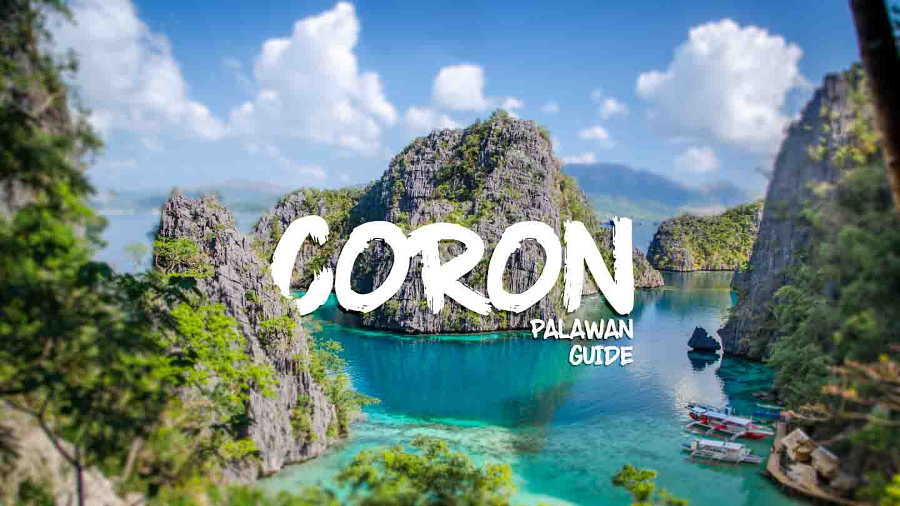

Coron Palawan
Coron is one of Palawan's most popular beach and island destinations. This paradise-like getaway
comprises of the eastern half of Busuanga Island, Coron Island, and 50 other islets within the vicinity, all of
which are separate from the main Palawan island. It has caught the attention of many due to its World War
II wreck diving spots, beautiful rock formations, and unbelievably clear waters. It is also considered the
more quiet and laidback sibling of El Nido, another famous Palawan destination because of its gorgeous
waters and scenery. Coron certainly has a unique charm to it and worth adding to your travel bucket list
when in the Philippines.
Coron has breathtaking tourist spots like Kayangan Lake, one of the cleanest lakes in the whole country. It's
nicknamed as The Blue Lagoon and surrounded by tall limestone formations, making the area look and feel
very secluded. Either enjoy the view or take a dip, the choice is up to you! If you want to see underwater
artifacts from the 40s, you'll enjoy wreck diving in the waters of Coron. There are different sites with
varying levels of depth, with some even visible to snorkelers. Take a break from the sea by going on a safari
tour when you visit the Calauit Game Refuge and Wildlife Sanctuary. Here, you'll be able to spot African
gazelles, zebras and brown deer. End the day on a relaxing note by taking a dip at the Maniquit Hot Springs
or watch the sunset from the top of Mt. Tapyas.
Bohol Island
The home of the famous Chocolate Hills, Bohol is one of the most visited destinations in the Central Visayas region of the Philippines. The island province offers breathtaking spots for history buffs, beach lovers, and adrenaline junkies. Bohol is comprised of one major island and 73 smaller ones surrounding it, so you'll have plenty of places to explore during your trip here. One thing's for sure: You'll enjoy every second of your stay and love the diversity that Bohol offers.
A Bohol experience would never be complete without visiting the Chocolate Hills. These geological wonder is spread over an area of 50 square kilometers and covers the towns of Carmen, Sagbayan, Bilar, Sierra Bullones and Valencia. These grass-covered hills turn brown during the summer hence the coined name, Chocolate Hills. To encounter something wild, head over to the Philippine Tarsier Sanctuary in the town of Corella and meet the smallest primate in the world - the Philippine Tarsier. These cute, furry creatures measures the size of an adult human thumb and are active at night.
Boracay Island
Boracay Island in the Philippines is paradise for certified beach and sun-worshippers around the world. Hailed by Yahoo Travel and BMW Tropical Beach Handbook as one of the world's best beaches, Boracay continues to entice beach loving tourists to its sun bleached shores of powder-soft white sands that never get hot even in the afternoon sun. Boracay Island has more than a dozen beaches and many coves. The most famous and popular boracay beach is the almost four kilometres long White Beach, which has been named several times as one of the best beaches in the world. Most of the foreign tourists who had been here have made Boracay their yearly destination. Others have chosen to live on this haven.
Boracay Island is located approximately 350 kilometers south of Manila, Philippines. The island is a short distance off the north-western tip of Panay Island, which is in the western Visayas in the Philippines. Boracay Island is about seven kilometres long and its narrowest point barely 1 kilometer wide, comprising an area of 1,083 hectares.